We are now going to learn a very important geometrical concept called congruence. To understand the concept of congruency of triangles, let us first look into the congruency of shapes.
4.4.1 Congruency of Shapes
Let us observe the following pictures.
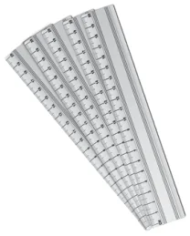
Fig. 4.17
To understand congruency of shapes, let us take a bundle of currency notes of same denomination and choose any two currency notes and place them one over the other. We are able to place them in such a way that one currency note matches exactly with the other in size and shape. Hence all the currency notes in the bundle are equal in both size and shape.
Any pair or set of objects with this property are said to be congruent.
How can we check the congruence of two objects or figures?
To check the congruence of the objects, we can use the method of superposition. In this method we have to make a trace-copy of one figure and place it over the other. If the figures match each other completely then, they are said to be congruent. In this method to match the original with the trace copy, we are not allowed to bend, twist or stretch, but we can translate or rotate.
4.4.2 Congruence of Line Segments
Measure and observe the following line segments.
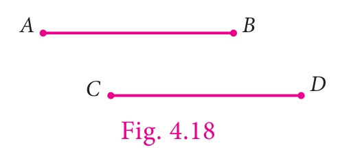
The line segments \(\overline{AB}\) and \(\overline{CD}\) have the same length. If we use the superposition method \(\overline{AB}\) and \(\overline{CD}\) will match each other. Hence the line segments are congruent and we can write it as \(\overline{AB} \cong \overline{CD}\).
Since we are considering the lengths of the line segments for congruence we can also write \(\overline{AB} \cong \overline{CD}\) as \(\overline{AB} = \overline{CD}\).
From the above cases, we understand that lines are congruent if they have the same length.
Try these
Measure and group the pair of congruent line segments.
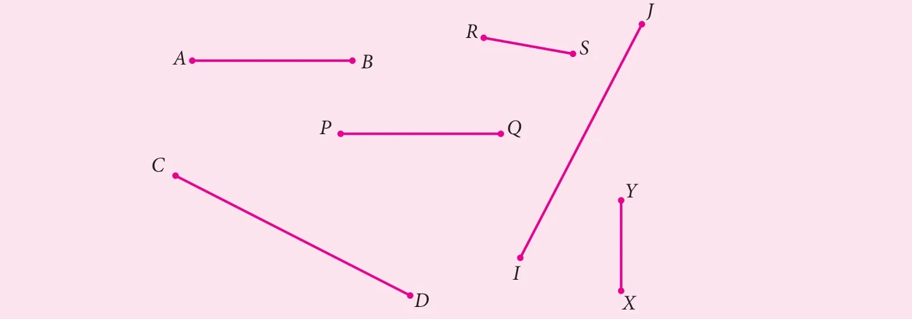
4.4.3 Congruence of Angles
Look at the following angles.
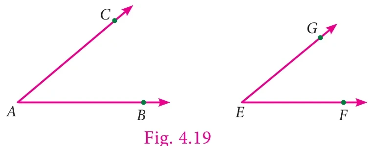
To check the congruency of angles \(\angle BAC\) and \(\angle FEG\), make a trace copy of \(\angle BAC\). By superposition method, if we try to match \(\angle BAC\) with the \(\angle FEG\) by placing the arm \(AB\) on the arm \(EF\), then the arm \(AC\) will coincide with the arm \(EG\). Even if length of the arms are different, the angles \(\angle BAC\) matches exactly with \(\angle FEG\). Hence the angles are congruent.
If two angles (\(\angle BAC\) and \(\angle FEG\)) are congruent, it can be represented as \(\angle BAC \cong \angle FEG\).
As in the case of line segments, congruence of angles depends only on the measures of the angles. So if we want to say two angles are congruent, the measures of the angles should be equal.
Hence we can write \(\angle BAC = \angle FEG\) for \(\angle BAC \cong \angle FEG\).
Try these
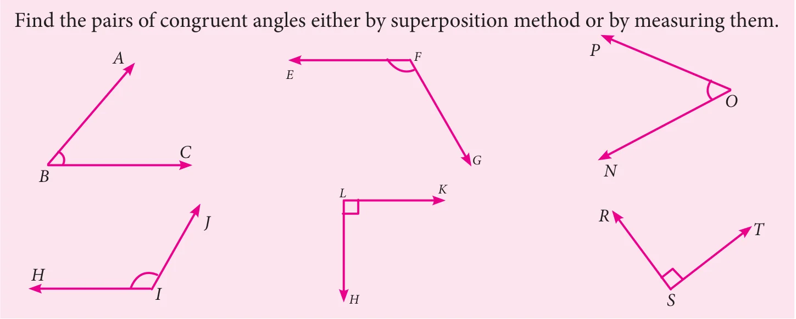
4.4.4 Congruence of Plane Figures
Examine the following pairs of plane figures.
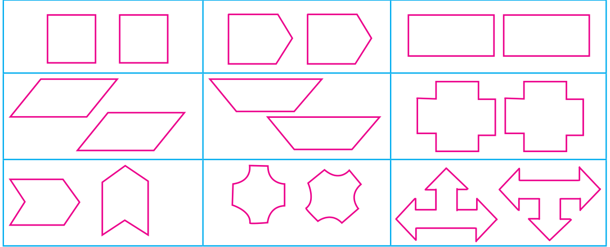
They are identical in shape and size. Their sides (line segments) are equal and the angles are also equal.
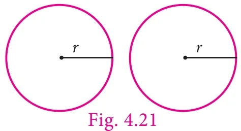
Observe the circles given in Fig. 4.21.
Their radii are equal. If they are placed on each other they will coincide. These types of figures are called congruent plane figures.
Note
In congruency, the coinciding parts are called corresponding parts. The coinciding sides are called corresponding sides and the coinciding angles are called corresponding angles.
So, if the corresponding sides and corresponding angles of two plane figures are equal then they are called congruent figures. If two plane figures \(F_1\) and \(F_2\) are congruent, we can write \(F_1 \cong F_2\)
4.4.5 Congruence of Triangles
Triangle is a closed figure formed by three line segments. There are three sides and three angles. If the corresponding sides and corresponding angles of two triangles are equal, then the two triangles are said to be congruent to each other.
Observe the following two triangles \(\triangle ABC\) and \(\triangle XYZ\).
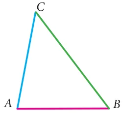
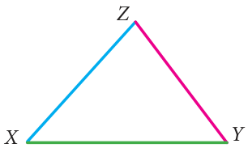
Fig. 4.22
By trace copy superposition method, it can be observed that \(\triangle XYZ\) matches identically with \(\triangle ABC\).
All the sides and the angles of \(\triangle ABC\) are equal to the corresponding sides and angles of \(\triangle XYZ\). So we can say the two triangles are congruent. We can express it as \(\triangle ABC \cong \triangle XYZ\).
We can also observe that the vertex \(A\) matches with vertex \(Z\), \(B\) matches with \(Y\) and \(C\) matches with \(X\). They are called corresponding vertices.
The side \(AB\) matches \(YZ\), \(BC\) matches \(XY\) and \(CA\) matches \(ZX\). These pairs are called corresponding sides.
Also, \(\angle A = \angle Z\), \(\angle B = \angle Y\) and \(\angle C = \angle X\). These pairs are called corresponding angles.
In the above case, the correspondance is \(A \leftrightarrow Z,\ B \leftrightarrow Y,\ C \leftrightarrow X\). We write this as \(ABC \leftrightarrow XYZ\).
Suppose we try to match vertex \(A\) with vertex \(Y\) or vertex \(X\) (Fig. 4.23), we can observe that the triangles do not match each other.
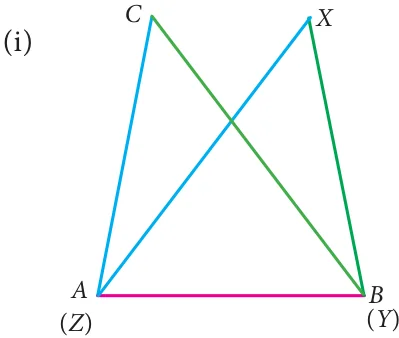
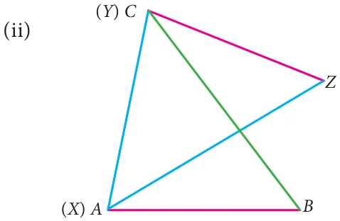
This does not imply that the two triangles are not congruent.
So to confirm the congruency of given two triangles, we have to check the congruency of corresponding sides and corresponding angles.
Hence, the above triangles \(\triangle ABC \cong \triangle XYZ\) are congruent.
So, we conclude that, if all the sides and all the angles of one triangle are equal to the corresponding sides and angles of another triangle, then the two triangles are congruent to each other.
4.4.6 Conditions for Triangles to be Congruent
We learnt to check the congruency of triangles by superposition method. Let us check the congruency of triangles using appropriate measures which will be very useful. We can study them as criterions to check the congruency of triangles.
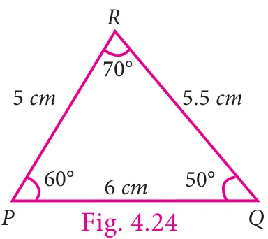
Look at the following triangle (Fig. 4.24).
To draw a triangle congruent to the given triangle do we need to know all measures of sides and angles of the triangle?
To construct a triangle, we need only three measures. Those three measures can be any of the following.
- The lengths of all three sides. (or)
- The lengths of two sides and the angle included between those two sides. (or)
- Two angles and the length of the side included by angles.
We can try the above conditions one by one.
1. Side - Side - Side congruence criterion (SSS) - The lengths of all three sides are given
Draw a triangle \(XYZ\) given that \(XY = 6\text{ cm}\), \(YZ = 5.5\text{ cm}\) and \(ZX = 5\text{ cm}\)
Step 1: Draw a line. Mark \(X\) and \(Y\) on the line such that \(XY = 6\text{ cm}\)
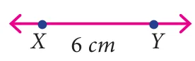
Step 2: With \(X\) as centre, draw an arc of radius \(5\text{ cm}\) above the line \(XY\).
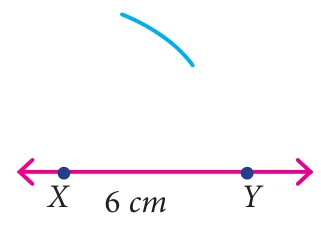
Step 3: With \(Y\) as centre, draw an arc of radius \(5.5\text{ cm}\) to intersect arc drawn in step 2. Mark the point of intersection as \(Z\).
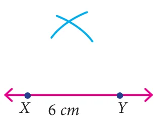
Step 4: Join \(XZ\) and \(YZ\).
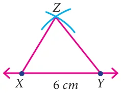
Now \(XYZ\) is the required triangle.
Using trace copy superposition method, if we place the \(\triangle XYZ\) on the \(\triangle PQR\) (Fig. 4.24) in such a way that the sides \(PQ\) on \(XY\), \(PR\) on \(XZ\) and \(QR\) on \(YZ\), then both the triangles (\(\triangle XYZ\) and \(\triangle PQR\)) matches exactly in size and shape.
Here we used only sides to check the congruence of the triangles, so we can say the condition as, if three sides of one triangle are equal to the corresponding sides of the other triangle then the two triangles are congruent. This criterion of congruency is known as Side - Side - Side.
Note
It two triangles are congruent then their corresponding parts are congruent. We can say "Corresponding Parts of Congruent Triangles are Congruent". It can be abbreviated as CPCTC.
2. Side-Angle-Side congruence criterion (SAS) - The lengths of two sides and the angle included between the two sides are given.
Draw a triangle \(ABC\) given that \(AB = 6\text{ cm}\), \(AC = 5\text{ cm}\) and \(\angle A = 60^{\circ}\)
Step 1: Draw a line. Mark \(A\) and \(B\) on the line such that \(AB = 6\text{ cm}\)
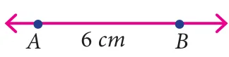
Step 2: At \(A\), draw a ray \(AX\) making an angle of \(60^{\circ}\) with \(AB\).
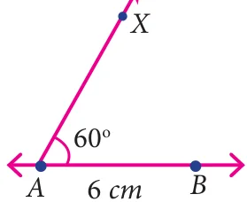
Step 3: With \(A\) as centre, draw an arc of radius \(5\text{ cm}\) to cut the ray \(AX\). Mark the point of intersection as \(C\).
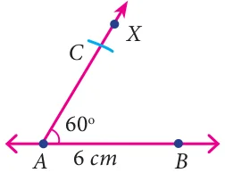
Step 4: Join \(BC\).
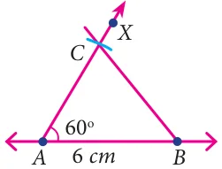
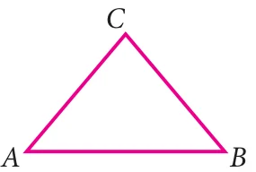
\(ABC\) is the required triangle.
Using trace copy superposition method, if we place the \(\triangle ABC\) on the \(\triangle PQR\) (Fig. 4.24) in such a way that the sides \(AB\) on \(PQ\), \(AC\) on \(PR\) and the \(\angle A\) on \(\angle P\), then both the triangles (\(\triangle ABC\) and \(\triangle PQR\)) matches exactly in size and shape. Here, we are using only two sides and one included angle to check the congruence of triangles.
So we can say, if two sides and the included angle of a triangle are equal to the corresponding two sides and the included angle of another triangle, then the two triangles are congruent to each other.
This criterion is called Side - Angle - Side.
3. Angle - Side - Angle congruence criterion (ASA) - Two angles and the length of a side included by the angles are given.
Draw a triangle \(LMN\) given that \(LM = 5.5\text{ cm}\), \(\angle M = 70^{\circ}\) and \(\angle L = 50^{\circ}\).
Step 1: Draw a line. Mark \(L\) and \(M\) on the line such that \(LM = 5.5\text{ cm}\).
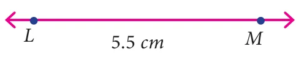
Step 2: At \(L\), draw a ray \(LX\) making an angle of \(50^{\circ}\) with \(LM\).
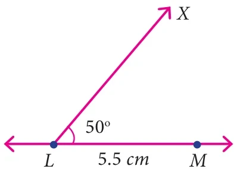
Step 3: At \(M\), draw another ray \(MY\) making an angle of \(70^{\circ}\) with \(LM\). Mark the point of intersection of the rays \(LX\) and \(MY\) as \(N\).
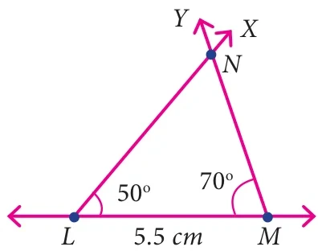
\(LMN\) is the required triangle.
Using trace copy superposition method, if we place the \(\triangle LMN\) on the \(\triangle PQR\) (Fig. 4.24) in such a way that the angles \(\angle L\) on \(\angle Q\), \(\angle M\) on \(\angle R\) and the side \(LM\) on \(QR\), then both the triangles (\(\triangle LMN\) and \(\triangle PQR\)) matches exactly in size and shape. Here, we used only two angles and one included side to check the congruence of triangles.
Therefore, we can say, if two angles and the included side of one triangle are congruent to the corresponding parts of another triangle, then the two triangles are congruent. This criterion is called Angle - Side - Angle criterion.
Note
There is one more criterion to check the congruency of triangle. This criterion is called Angle - Angle - Side criterion which is a slight modification of ASA criterion. In this criterion the congruent side is not included between the congruent angles. So we can say, if two angles and a non-included side of one triangle are congruent to the corresponding parts of another triangle, then also the triangles are congruent.
Hypotenuse
In earlier class we learnt about right angled triangle. In a right angled triangle, one angle is a right angle and other angles are acute angles.
Observe the following right angled triangles.
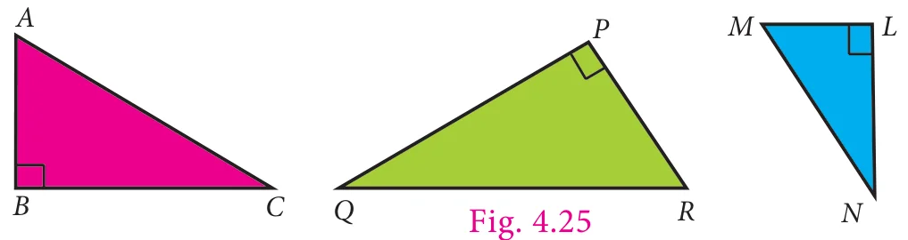
In all the given triangles the side which is opposite to the right angle is the largest side called Hypotenuse.
In the above triangles the sides \(AC\), \(QR\) and \(MN\) are the hypotenuse. Remember that hypotenuse is related with right angled triangles only.
4. Right Angle - Hypotenuse - Side congruence criterion (RHS)
The name of the criterion clearly states that this criterion is used with right angled triangles only.
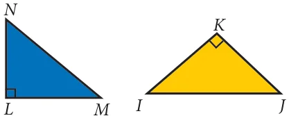
Observe the two given right angled triangles.
In these two triangles right angle is common. And if we are given the sides making right angles then we can use the SAS criterion to check the congruency of the triangles.
Or if we are given one side containing right angle and hypotenuse, then we can have new criterion, if the hypotenuse and one side of a right angled triangle is equal to the hypotenuse and one side of another right angled triangle then the two right angled triangles are congruent.
This is called Right angle - Hypotenuse - Side criterion.
Note
We learnt the congruency criterions of triangles. The following ordered combinations of measurement of triangles will not be sufficient to prove congruency of triangles.
Angle - Angle - Angle (AAA) combination will not always prove triangles congruent. This combination will give triangles of same shape but not of same size.
Side - Side - Angle (or) Angle - Side - Side (SSA or ASS) combination also will not prove congruency of triangles. This combination deals with two sides and a non-included angle.
Try these
- If \(\triangle ABC \cong \triangle XYZ\) then list the corresponding sides and corresponding angles.
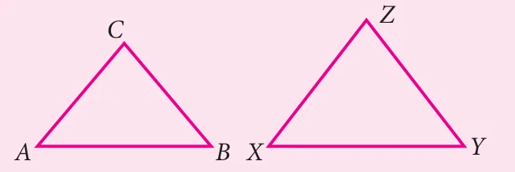
- Given triangles are congruent. Identify the corresponding parts and write the congruent statement.
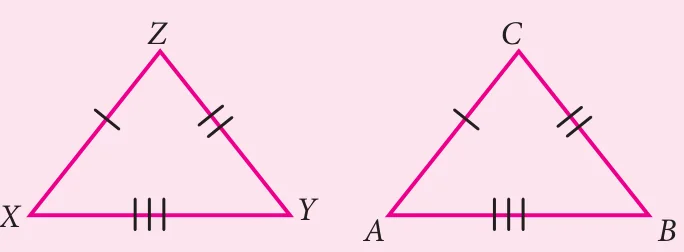
- Mention the conditions needed to conclude the congruency of the triangles with reference to the above said criterions. Give reasons for your answer.
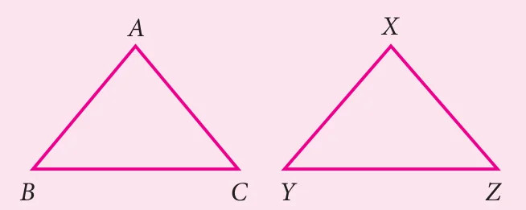